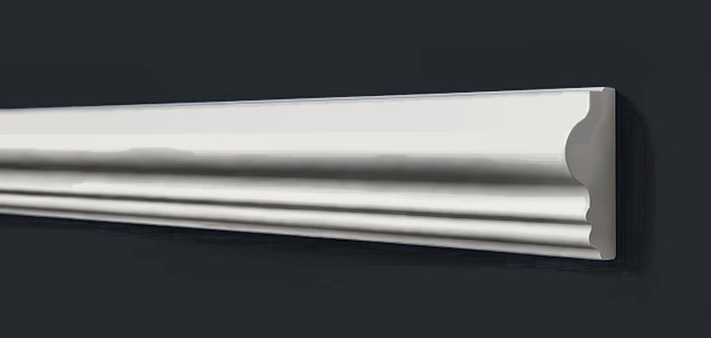

Молдинг для стен A602 под покраску, 20×10×2000 мм
20×10×2000 мм, дюрополимер, под покраску

Профиль (сечение)
Сечение в масштабе: ширина 20 мм, толщина 10 мм (стена снизу). Контур снят с каталога производителя.
Характеристики
| Артикул | A602 |
| Тип | Молдинг для стен |
| Ширина | 20 мм |
| Толщина | 10 мм |
| Длина | 2000 мм |
| В коробке | 70 шт |
| Материал | дюрополимер (полистирол высокой плотности) |
| Покрытие | белый грунт, под покраску |
| Производитель | ARTDEC (Казахстан) |
О товаре
A602 — настенный декоративный молдинг ARTDEC из дюрополимера под покраску, 20×10×2000 мм. Из него собирают рамки и панно на стенах, закрывают стык обоев и покраски, делят стену на зоны.
Молдинг поставляется белым и красится вместе со стеной или в контрастный цвет. Монтаж на клей (жидкие гвозди), углы запиливаются под 45°. Для рамки считайте периметр плюс запас на подрезку.
Ещё в разделе «Молдинги»


Заявка
Ответим с ценой, наличием и сроком в рабочее время. Удобнее всего — позвонить +7 999 204-10-47 или написать в Telegram @IuliiaUsenko.
Менеджер подтвердит наличие и стоимость доставки и пришлёт ссылку на оплату картой или СБП: предоплата 50% (остаток при получении) или 100%. Самовывоз со склада в СПб — бесплатно.